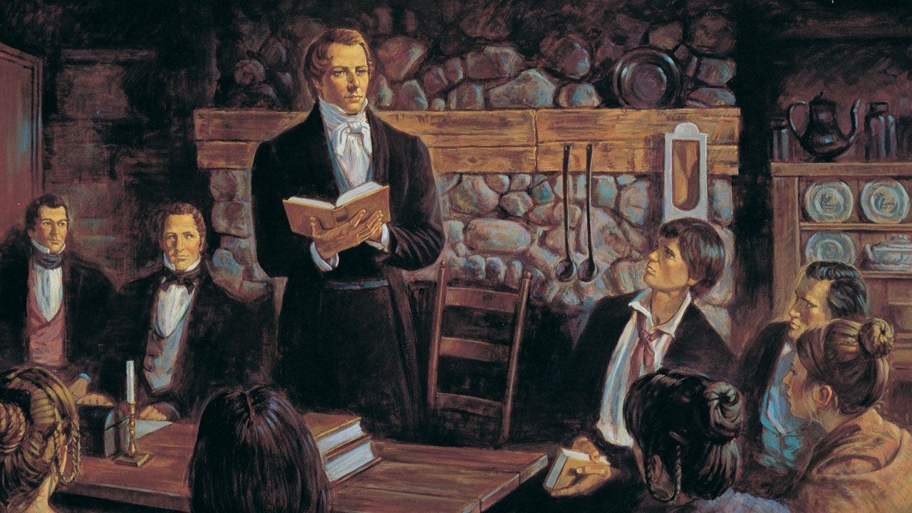

La Iglesia de Jesucristo de los Santos de los Últimos Días

Bienvenido
El Distrito Caleta Olivia está ubicado en la Patagonia Argentina. Nuestra base se encuentra en la rama de Caleta Olivia, una ciudad con aproximadamente 80.000 habitantes en el norte de la provincia de Santa Cruz.
El distrito se extiende hacia el oeste y el sur, cubriendo todo el norte de la provincia de Santa Cruz con 4 ramas:
- Caleta Olivia
- Pico Truncado
- Las Heras
- Puerto Deseado

La iglesia fue establecida en Santa Cruz en el año 1978. Miles de personas han conocido el Evangelio de Jesucristo desde entonces.
Aprenda más acerca de nosotros...
Las personas sirven en la iglesia de manera voluntaria para ayudar a todos a conocer y vivir el Evangelio de Jesucristo.
Conozca a nuestros líderes...